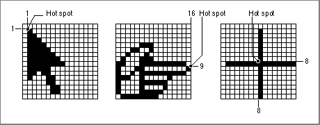

About the Cursor
A cursor is a 256-pixel, black-and-white image in a 16-by-16 pixel square usually defined by an application in a cursor ('CURS') resource. The cursor is an integral part of the Macintosh user interface. The user manipulates the cursor with the mouse to select objects or areas on the screen. (It appears only on the screen and never in an offscreen graphics port.) The user moves the cursor across the screen by moving the mouse. Most actions take place only when the user positions the cursor over an object on the screen, then clicks (presses and releases the mouse button). For example, a user might point at a document icon created by your application and click to select it, then choose the Open command from the File menu by pointing at it with the mouse button depressed and then releasing the mouse button.You use a cursor in the content area of your application's windows to allow the user to select all or part of the content. Your application also uses the cursor in the scroll bar area of its windows to adjust the position of the document's contents in the window area. You can change the shape of the cursor to indicate that a user is over a certain kind of content, such as text, or to provide feedback about the status of the computer system.
Basic QuickDraw supplies a predefined cursor in the global variable named
- Note
- Some Macintosh user manuals call the cursor a pointer because it points to a location on the screen. To avoid confusion with other meanings of pointer, Inside Macintosh uses the alternate term cursor.
arrow; this is the standard arrow cursor.One point in the cursor's image is designated as the hot spot, which in turn points to a location on the screen. The hot spot is the portion of the pointer that must be positioned over a screen object before mouse clicks can have an effect on that object. For example, when the user presses the mouse button, the Event Manager function
WaitNextEventreports the location of the cursor's hot spot in global coordinates. Figure 8-1 illustrates three cursors and their hot spot points.Figure 8-1 Hot spots in cursors

The hot spot is a point (not a bit) in the bit image for the cursor. Imagine the rectangle with corners (0,0) and (16,16) containing the cursor's bit image, as in each of the examples in Figure 8-1; each hot spot is defined in the local coordinate systems of these rectangles. For the arrow cursor in this figure, local coordinates (1,1) designate the hot spot. A hot spot of (8,8) is in the center of the crosshairs cursor in Figure 8-1. Notice that the hot spot for the pointing hand cursor has a horizontal coordinate of 16 and a vertical coordinate of 9.Whenever the user moves the mouse, the low-level interrupt-driven mouse routines move the cursor to a new location on the screen. Your application doesn't need to do anything to move the cursor.
Your application should change the cursor shape depending on where the user positions it on the screen. For example, when the cursor is in your application's menu bar, the cursor should usually have an arrow shape. When the user moves the cursor over a text document, your application should change the cursor's shape to an I-beam, which indicates where the insertion point will move if the user clicks. When it's over graphic objects, the cursor may have different shapes depending on the type of graphic and the operation that the user is attempting to complete. You should change the cursor shape only to provide information to the user. In other words, don't change its shape randomly.
In general, you should always make the cursor visible in your application. To maintain a stable and consistent environment, the user should have access to the cursor. There are a few cases when the cursor may not be visible. For example, in an application where the user is entering text, the insertion point should blink and the cursor should not be visible. If the cursor and the insertion point were both visible, it might confuse the user about where the input would appear. Or, if the user is viewing a slide show in a presentation software application, the cursor need not be visible. However, whenever the user needs access to the cursor, a simple move of the mouse should make the cursor visible again.
When the cursor is used for choosing and selecting, it should remain black. You may want to display a color cursor when the user is drawing or typing in color. The cursor shouldn't contain more than one color at a time, with the exception of a multicolored paintbrush cursor. It's hard for the eye to distinguish small areas of color. Make sure that the hot spot can be seen when it's placed on a background of a similar color. This can be accomplished by changing the color of the cursor or by adding a one-pixel outline in a contrasting color.
When your application is performing an operation that will take at least a couple of seconds, and more time than a user might expect, you need to provide feedback to the user that the operation is in progress. If the operation will last a second or two (a short operation), change the cursor to the wristwatch cursor. If the operation takes several seconds (a medium-length operation) and the user can do nothing in your application but stop the operation, wait until it is completed, or switch to another application, you need to display an animated cursor. This lets the user know that the computer system hasn't crashed--it's just busy. If the operation will take longer than several seconds (a lengthy operation), your application should display a status indicator to show the user the estimated total time and the elapsing time of the operation.
For more information about displaying cursors and status indicators in your application, see Macintosh Human Interface Guidelines.